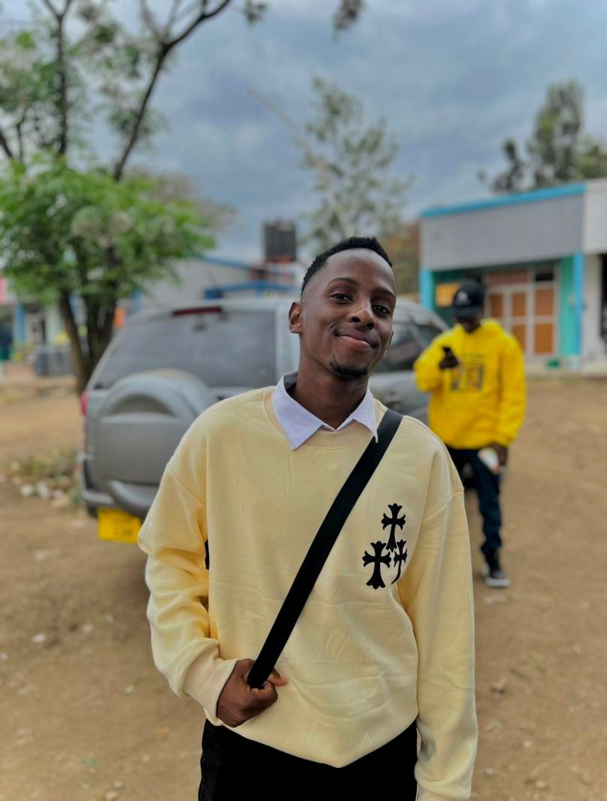

MY NAME IS CRISPIN MANDEPU
I am Crispin Francis Mandepu, currently a student at the University of Dar es Salaam majoring bachelor of science in Computer science driven by pure ambition and desire for perfection in a proffesional manner .
I am more passionate for the Tech world as I am ready to explore the very smallest tiny inch of it, Some extras may include excellent creativity and effectiveness in analysing various problems that appear in the contemporary society and know how to sort them smoothly through the modern day technology
Right now , I am more invested in software development as I have been working on multiple projects including an app development project that is currently waiting for its launch, Apart from that I have been working on a project that is related to the field of machine learning , data science and web development which is still in the early stages of development but I am sure it will be a great project that will be of great help to the society and the world at large.
USEFUL SKILLS
| LEVEL | SCHOOL | YEAR OF COMPLETION |
|---|---|---|
| PRIMARY | FILBERT BAYI | 2018 |
| SECONDARY | MUSABE BOYS | 2022 |
| ADVANCED | KISIMIRI HIGH | 2025 |
PHOTOS

Contact me through the link instagram